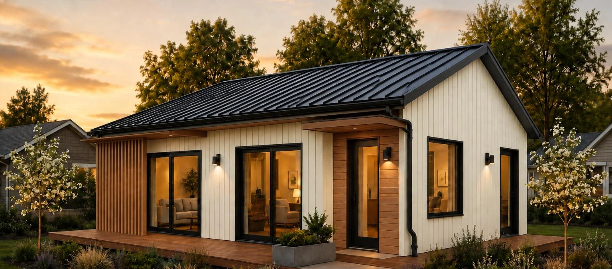
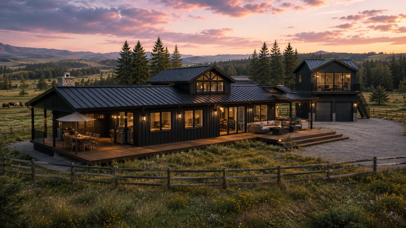
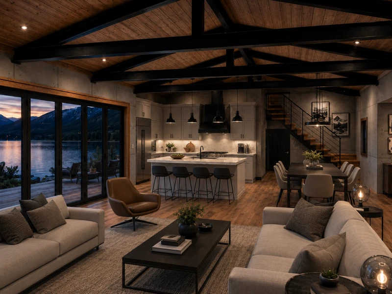
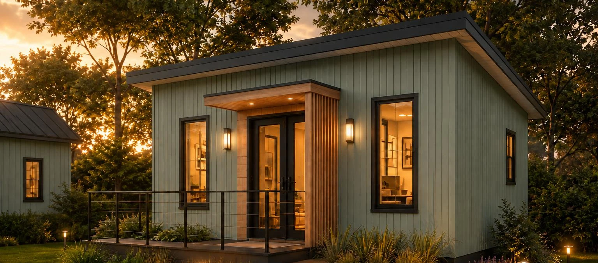

THE SEED COLLECTION / 06
Haven
Room for family. Space for what comes next.
THOUGHTFULLY SCALED. BEAUTIFULLY CONSIDERED.
Room for
possibility.
A place of your own.
A different way to begin.
CONTRACTORS / MODEL & PLAN STUDY
From vision to the details.
Start with the architecture.
Begin with the model brochure.
The Haven
Generous space for the ways life changes.
Source layouts and renderings may represent different revisions. Final U.S. configuration to be confirmed.
WHY SEED / A BETTER WAY TO BEGIN
The world changed.
Housing didn’t.
A home should offer strength, comfort, and a future within reach.
SEED began with a simple belief: lasting quality and attainable housing belong together. By combining steel construction, factory precision, and a compact folding design, SEED rethinks how a home is made and moved—creating thoughtfully planned spaces built around real life, with durability and long-term value at their heart.
02 / A DIFFERENT WAY TO ARRIVE
Small in transit.
Open to living.
SEED’s folding concept brings additional floor space out from a compact transport form. Explore the idea below, then return to the finished architecture.
Concept illustration only. Not model geometry, installation guidance, or a mechanically verified sequence.
03 / ENVISION THE EVERYDAY
And then,
you’re home.
Light at the windows. A welcoming entry.
Space to make your own.
04 / THE COLLECTION
Six homes. Your own beginning.
From a compact retreat to room for more.
Explore each model at your own pace.
Areas and layout options shown follow the supplied Drive model brochures. Source drawings can represent different revisions; final dimensions, specifications and U.S. project applicability require confirmation. Renderings are illustrative.
CUSTOM HOMES / THE FORGED COLLECTION
Industrial strength.
A personal expression.
Forged Steel Custom Homes bring exposed structure, natural materials and distinctive architecture together.

FORGED STEEL CUSTOM HOMES
Built around your way of living.
Remember building a place that was entirely your own? Forged draws on that childhood spirit of tree forts and personal sanctuaries, bringing steel, timber and stone into homes with imagination and purpose. Inspired by the honest utility of barns, the collection pairs bold structure with warm, open spaces made for gathering.
Explore the collection ↓Steel with character.
Exposed trusses and strong architectural lines make the structure part of the design.
Warmth in the details.
Timber, stone and textured finishes soften the industrial palette and give each space its own identity.
Start with how you live.
Explore layouts, finishes and outdoor connections around your land, your views and the people you call home.
THE INDUSTRIAL HOMESTEAD / DESIGN INSPIRATION
Find your point of departure.
Ranch living, modern retreats and the spaces within. Explore a mix of exteriors and interiors, then select a view for a closer look.
RANCH I
A broad horizon. A welcoming center.
An open ranch concept framed by black steel, warm wood and room to gather outdoors.
RANCH II
Light, landscape, everyday living.
A bright exterior, generous glazing and a sheltered terrace connect home and landscape.
OUTSIDE & IN / LIFE AT HOME
A whole picture of home.
Places to gather, quiet corners to unwind, and architecture that connects them.
GATHERING KITCHEN
Exposed steel, warm timber and a generous island bring people together.
LIVING SPACES
Open living and dining, natural textures and views beyond the glass.
TWO STORY RANCH
A different form with two levels, generous glazing and outdoor living.
MOD INDUSTRIAL
A smaller footprint. A bold presence.
A modern two-story concept with expansive windows and outdoor spaces on both levels.
BUNKHOUSE
A welcoming porch. A place of your own.
A flexible two- or three-bedroom concept with exposed structure and modern homestead character.
STONE HOMESTEAD / EXTERIOR STUDY
Natural texture. Lasting character.
A stone-clad exterior, timber-framed entry and dark roof bring a different expression to the homestead collection.

THE LIFE INSIDE
Honest materials.
Inviting spaces.
Open living, dining and kitchen spaces put everyday connection at the heart of the home. Exposed steel, timber surfaces and concrete-panel walls create depth and warmth, while generous glazing opens the room to the landscape.
Tell us what home looks like to you ↗Bring your land, your inspiration and your wish list. Let’s explore your custom home.
Talk with our U.S. team ↗Concept renderings from the Forged collection. Designs, dimensions, finishes, engineering, pricing and project scope are developed and confirmed for each project. Features shown are illustrative.

SUSTAINABLE · ENVIRONMENTAL · ECONOMIC · DWELLINGS05 / THE SEED STORY
Good things start with a seed.
Thoughtfully scaled homes for the ways you want to live.
Explore thoughtfully scaled spaces, a range of layouts, and an approach to transport that begins with a compact folding form.
Seed Homes America brings six models into focus for U.S. projects, from a personal retreat to a home with room for family, work and everyday life.
What to confirm for a U.S. project +
Model revision, local approvals, engineering, site access, foundation, utilities, finishes, delivery scope and installation responsibilities must be reviewed for your project. U.S. availability, warranties, pricing and service areas are not yet stated in this review.
06 / FOR THE PEOPLE WHO BUILD
The collection. Drawing by drawing.
Scroll through the collection.
Select a drawing category to update its preview.
07 / YOUR NEXT CHAPTER
Let’s imagine what comes next.
Choose a model. Tell us about your setting.
Start with a clear picture of what home means to you.